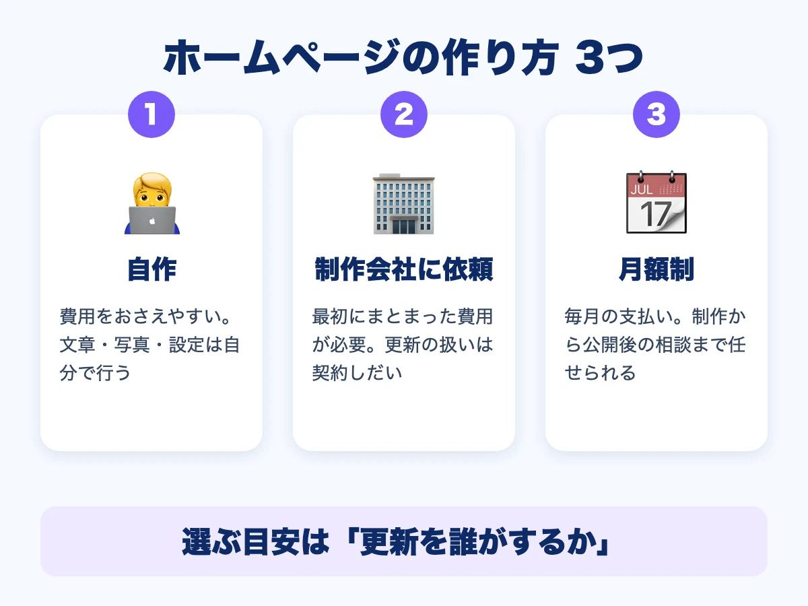

ホームページは自作？制作会社？月額制？｜3つの作り方を比べて選ぶ

ホームページを持とうと思ったとき、「自分で作るか」「制作会社に頼むか」で迷う方は多いです。さらに、制作会社への頼み方にも、「最初にまとめて払う」ものと、「毎月払う」ものがあります。この記事では、3つの作り方を、4つの視点で比べて、選び方をまとめます。
- 作り方は「自作」「制作会社に依頼（まとめて支払い）」「月額制」の3つ
- 比べる視点は「費用」「手間」「更新のしやすさ」「困ったときの相談先」
- どれが正しいということはなく、時間・予算・得意なことで選ぶ

3つの作り方を、4つの視点で比べる
| 視点 | 自作 | 制作会社に依頼（まとめて支払い） | 月額制 |
|---|---|---|---|
| 費用 | おさえやすい（サービスの利用料など） | 最初にまとまった費用が必要 | 最初は小さく、毎月かかる |
| 手間 | 文章・写真・設定を自分で行う | 打ち合わせと確認が中心 | 打ち合わせと確認が中心 |
| 更新のしやすさ | 自分のペースで直せる | 契約の内容による（有料のことも） | プランの範囲で依頼できる |
| 困ったときの相談先 | 自分で調べる、またはサポート窓口 | 契約の内容による | 制作会社に相談できる |
※上の表は、一般的な傾向をまとめたものです。実際の内容は、サービスや会社によって違います。契約の前に、必ず確認してください。
自作が向いているのは
時間があり、文章や写真を自分で整えるのが苦にならない方です。費用をおさえられ、思い立ったときにすぐ直せるのが良いところです。一方で、デザインや、検索で見つけてもらうための設定は、自分で勉強する必要があります。
制作会社に頼む（まとめて支払い）が向いているのは
最初に予算を用意できて、デザインや内容をしっかり作り込みたい方です。完成したあとの更新や、サーバーなどの維持費が、どうなるかを確認しておきましょう。違いは、月額制と買い切り、どちらがいい？でも整理しています。
月額制が向いているのは
最初の費用をおさえて、更新や修正も任せたい方です。毎月の費用がかかる代わりに、制作から公開後の相談まで、同じ会社にお願いできます。「いつから請求が始まるか」「何が月額に含まれるか」「やめるときの扱い」は、契約の前に確認しましょう。契約前に確認したい7つのサインも参考になります。
どの方法でも、先に決めておきたいこと
- ホームページで、お客様に何をしてほしいか（電話・予約・来店など）
- 載せたい内容（サービス・料金・写真・場所）
- 公開後の更新を、誰がするか
考え方は、ホームページを作る前に決めておきたい5つのことにまとめています。流れは、ホームページ制作の流れをご覧ください。
RAIZONでは
RAIZONは、東大阪市の下小阪を拠点に、ホームページを月額制で制作しています。初期制作費は0円、月額9,800円（税抜）。月4回までの修正・更新が含まれ、最低契約期間はありません。月払いの場合のみ、初回に契約手数料5,000円（税抜）がかかります。費用の見方は、東大阪のホームページ制作の費用相場で、詳しく解説しています。なお、ホームページを作れば必ずお客様が増える、とはお約束できません。
よくある質問
最初は自作して、あとから頼むこともできますか？
できます。まず自分で作ってみて、難しいと感じたところから相談する方もいます。
月額制だと、ずっと払い続けることになりますか？
月額制は、続ける間、毎月の費用がかかります。やめるときの扱い（ホームページやデータがどうなるか）は、契約の前に確認しましょう。
まず何から相談すればいいですか？
お問い合わせフォームから、お気軽にご相談ください。「何を載せたらいいかわからない」という段階でも、大丈夫です。
ほかのコラム
 集客・運用
集客・運用ホームページから問い合わせを増やす5つの工夫｜電話・フォーム・載せる内容
ホームページを作ったのに問い合わせが少ない、という小さなお店・事業者さん向けに、問い合わせにつなげる5つの工夫を解説します。電話番号の見せ方、ボタンの置き場所、フォームの項目、料金や流れの書き方、写真での安心感を、やさしくまとめました。
 制作の基礎
制作の基礎東大阪の美容室・サロンのホームページに載せたい7つのこと｜メニュー・予約・スタッフ
東大阪の美容室・サロンがホームページを作るとき、載せておきたい情報を7つに整理しました。メニューと料金、予約の方法、スタッフ、施術の写真、行き方、営業時間、お知らせの載せ方をやさしく解説します。
 制作の基礎
制作の基礎東大阪の飲食店のホームページに載せたい7つのこと｜メニュー・地図・予約
東大阪の飲食店がホームページを作るとき、載せておきたい情報を7つに整理しました。メニューと料金、営業時間、行き方、写真、予約・問い合わせ、お店の紹介、お知らせの載せ方をやさしく解説します。